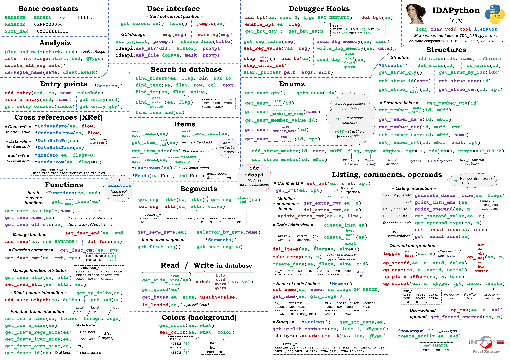

IDAPro-7.7 Cheat Sheet
最近在写插桩后二进制文件的控制流以及数据流等数据的抽取的 IDAPro 脚本, 需要用到很多 IDAPro 提供的 APIs, 这里做一个总结. (持续更新中
Environments: IDAPro 7.7, Python=3.9
One Figure for All

Constants
ida_idaapi.BADADDR == 0xFFFFFFFF
ida_idaapi.SIZE_MAX == 0xFFFFFFFF
# in idc.py
idc.FUNC_LIB == 0x4
idc.FUNCATTR_FLAGS == 0x10
idc.INF_MIN_EA == 0x13
idc.INF_MAX_EA == 0x14
idc.FUNC_THUNK == 0x80
_INF_attrs 定义在 idc.py
_INF_attrs_accessors = {
INF_ABIBITS : (ida_ida.inf_get_abibits, ida_ida.inf_set_abibits),
INF_AF : (ida_ida.inf_get_af, ida_ida.inf_set_af),
INF_AF2 : (ida_ida.inf_get_af2, ida_ida.inf_set_af2),
INF_APPCALL_OPTIONS : (ida_ida.inf_get_appcall_options, ida_ida.inf_set_appcall_options),
INF_APPTYPE : (ida_ida.inf_get_apptype, ida_ida.inf_set_apptype),
INF_ASMTYPE : (ida_ida.inf_get_asmtype, ida_ida.inf_set_asmtype),
INF_BASEADDR : (ida_ida.inf_get_baseaddr, ida_ida.inf_set_baseaddr),
INF_BIN_PREFIX_SIZE : (ida_ida.inf_get_bin_prefix_size, ida_ida.inf_set_bin_prefix_size),
INF_CC_CM : (ida_ida.inf_get_cc_cm, ida_ida.inf_set_cc_cm),
INF_CC_DEFALIGN : (ida_ida.inf_get_cc_defalign, ida_ida.inf_set_cc_defalign),
INF_CC_ID : (ida_ida.inf_get_cc_id, ida_ida.inf_set_cc_id),
INF_CC_SIZE_B : (ida_ida.inf_get_cc_size_b, ida_ida.inf_set_cc_size_b),
INF_CC_SIZE_E : (ida_ida.inf_get_cc_size_e, ida_ida.inf_set_cc_size_e),
INF_CC_SIZE_I : (ida_ida.inf_get_cc_size_i, ida_ida.inf_set_cc_size_i),
INF_CC_SIZE_L : (ida_ida.inf_get_cc_size_l, ida_ida.inf_set_cc_size_l),
INF_CC_SIZE_LDBL : (ida_ida.inf_get_cc_size_ldbl, ida_ida.inf_set_cc_size_ldbl),
INF_CC_SIZE_LL : (ida_ida.inf_get_cc_size_ll, ida_ida.inf_set_cc_size_ll),
INF_CC_SIZE_S : (ida_ida.inf_get_cc_size_s, ida_ida.inf_set_cc_size_s),
INF_CMTFLAG : (ida_ida.inf_get_cmtflg, ida_ida.inf_set_cmtflg),
INF_CMT_INDENT : (ida_ida.inf_get_cmt_indent, ida_ida.inf_set_cmt_indent),
INF_DATABASE_CHANGE_COUNT : (ida_ida.inf_get_database_change_count, ida_ida.inf_set_database_change_count),
INF_DATATYPES : (ida_ida.inf_get_datatypes, ida_ida.inf_set_datatypes),
INF_DEMNAMES : (ida_ida.inf_get_demnames, ida_ida.inf_set_demnames),
INF_END_PRIVRANGE : (ida_ida.inf_get_privrange_end_ea, ida_ida.inf_set_privrange_end_ea),
INF_FILETYPE : (ida_ida.inf_get_filetype, ida_ida.inf_set_filetype),
INF_GENFLAGS : (ida_ida.inf_get_genflags, ida_ida.inf_set_genflags),
INF_HIGHOFF : (ida_ida.inf_get_highoff, ida_ida.inf_set_highoff),
INF_INDENT : (ida_ida.inf_get_indent, ida_ida.inf_set_indent),
INF_LENXREF : (ida_ida.inf_get_lenxref, ida_ida.inf_set_lenxref),
INF_LFLAGS : (ida_ida.inf_get_lflags, ida_ida.inf_set_lflags),
INF_LIMITER : (ida_ida.inf_get_limiter, ida_ida.inf_set_limiter),
INF_LISTNAMES : (ida_ida.inf_get_listnames, ida_ida.inf_set_listnames),
INF_LONG_DEMNAMES : (ida_ida.inf_get_long_demnames, ida_ida.inf_set_long_demnames),
INF_LOWOFF : (ida_ida.inf_get_lowoff, ida_ida.inf_set_lowoff),
INF_MAIN : (ida_ida.inf_get_main, ida_ida.inf_set_main),
INF_MARGIN : (ida_ida.inf_get_margin, ida_ida.inf_set_margin),
INF_MAXREF : (ida_ida.inf_get_maxref, ida_ida.inf_set_maxref),
INF_MAX_AUTONAME_LEN : (ida_ida.inf_get_max_autoname_len, ida_ida.inf_set_max_autoname_len),
INF_MAX_EA : (ida_ida.inf_get_max_ea, ida_ida.inf_set_max_ea),
INF_MIN_EA : (ida_ida.inf_get_min_ea, ida_ida.inf_set_min_ea),
INF_MODEL : (ida_ida.inf_get_cc_cm, ida_ida.inf_set_cc_cm),
INF_NAMETYPE : (ida_ida.inf_get_nametype, ida_ida.inf_set_nametype),
INF_NETDELTA : (ida_ida.inf_get_netdelta, ida_ida.inf_set_netdelta),
INF_OMAX_EA : (ida_ida.inf_get_omax_ea, ida_ida.inf_set_omax_ea),
INF_OMIN_EA : (ida_ida.inf_get_omin_ea, ida_ida.inf_set_omin_ea),
INF_OSTYPE : (ida_ida.inf_get_ostype, ida_ida.inf_set_ostype),
INF_OUTFLAGS : (ida_ida.inf_get_outflags, ida_ida.inf_set_outflags),
INF_PREFFLAG : (ida_ida.inf_get_prefflag, ida_ida.inf_set_prefflag),
INF_PRIVRANGE_END_EA : (ida_ida.inf_get_privrange_end_ea, ida_ida.inf_set_privrange_end_ea),
INF_PRIVRANGE_START_EA : (ida_ida.inf_get_privrange_start_ea, ida_ida.inf_set_privrange_start_ea),
INF_PROCNAME : (ida_ida.inf_get_procname, ida_ida.inf_set_procname),
INF_REFCMTNUM : (ida_ida.inf_get_refcmtnum, ida_ida.inf_set_refcmtnum),
INF_SHORT_DEMNAMES : (ida_ida.inf_get_short_demnames, ida_ida.inf_set_short_demnames),
INF_SPECSEGS : (ida_ida.inf_get_specsegs, ida_ida.inf_set_specsegs),
INF_START_CS : (ida_ida.inf_get_start_cs, ida_ida.inf_set_start_cs),
INF_START_EA : (ida_ida.inf_get_start_ea, ida_ida.inf_set_start_ea),
INF_START_IP : (ida_ida.inf_get_start_ip, ida_ida.inf_set_start_ip),
INF_START_PRIVRANGE : (ida_ida.inf_get_privrange_start_ea, ida_ida.inf_set_privrange_start_ea),
INF_START_SP : (ida_ida.inf_get_start_sp, ida_ida.inf_set_start_sp),
INF_START_SS : (ida_ida.inf_get_start_ss, ida_ida.inf_set_start_ss),
INF_STRLIT_BREAK : (ida_ida.inf_get_strlit_break, ida_ida.inf_set_strlit_break),
INF_STRLIT_FLAGS : (ida_ida.inf_get_strlit_flags, ida_ida.inf_set_strlit_flags),
INF_STRLIT_PREF : (ida_ida.inf_get_strlit_pref, ida_ida.inf_set_strlit_pref),
INF_STRLIT_SERNUM : (ida_ida.inf_get_strlit_sernum, ida_ida.inf_set_strlit_sernum),
INF_STRLIT_ZEROES : (ida_ida.inf_get_strlit_zeroes, ida_ida.inf_set_strlit_zeroes),
INF_STRTYPE : (ida_ida.inf_get_strtype, ida_ida.inf_set_strtype),
INF_TYPE_XREFNUM : (ida_ida.inf_get_type_xrefnum, ida_ida.inf_set_type_xrefnum),
INF_VERSION : (ida_ida.inf_get_version, ida_ida.inf_set_version),
INF_XREFFLAG : (ida_ida.inf_get_xrefflag, ida_ida.inf_set_xrefflag),
INF_XREFNUM : (ida_ida.inf_get_xrefnum, ida_ida.inf_set_xrefnum),
}
Entry
def add_entry(*args) -> "bool":
r"""
add_entry(ord, ea, name, makecode, flags=0) -> bool
Add an entry point to the list of entry points.
@param ord: (C++: uval_t) ordinal number if ordinal number is equal to 'ea' then ordinal is
not used
@param ea: (C++: ea_t) linear address
@param name: (C++: const char *) name of entry point. If the specified location already has a name,
the old name will be appended to the regular comment. If name ==
nullptr, then the old name will be retained.
@param makecode: (C++: bool) should the kernel convert bytes at the entry point to
instruction(s)
@param flags: (C++: int) See AEF_*
@return: success (currently always true)
"""
return _ida_entry.add_entry(*args)
def get_entry(*args) -> "ea_t":
r"""
get_entry(ord) -> ea_t
Get entry point address by its ordinal
@param ord: (C++: uval_t) ordinal number of entry point
@return: address or BADADDR
"""
return _ida_entry.get_entry(*args)
def get_input_file_path(*args) -> "size_t":
r"""
get_input_file_path() -> str
Get full path of the input file.
"""
return _ida_nalt.get_input_file_path(*args)
Cross References (XRef)
def CodeRefsTo(ea, flow):
"""
Get a list of code references to 'ea'
@param ea: Target address
@param flow: Follow normal code flow or not
@type flow: Boolean (0/1, False/True)
@return: list of references (may be empty list)
Example::
for ref in CodeRefsTo(get_screen_ea(), 1):
print(ref)
"""
# TO_REFACTOR_ON_PY2_REMOVAL
# we can use the new generators
# xref = ida_xref.xrefblk_t()
# if flow == 1:
# yield from xref.crefs_to(ea)
# else:
# yield from xref.fcrefs_to(ea)
if flow == 1:
return refs(ea, ida_xref.get_first_cref_to, ida_xref.get_next_cref_to)
else:
return refs(ea, ida_xref.get_first_fcref_to, ida_xref.get_next_fcref_to)
def CodeRefsFrom(ea, flow):
"""
Get a list of code references from 'ea'
@param ea: Target address
@param flow: Follow normal code flow or not
@type flow: Boolean (0/1, False/True)
@return: list of references (may be empty list)
Example::
for ref in CodeRefsFrom(get_screen_ea(), 1):
print(ref)
"""
# TO_REFACTOR_ON_PY2_REMOVAL
if flow == 1:
return refs(ea, ida_xref.get_first_cref_from, ida_xref.get_next_cref_from)
else:
return refs(ea, ida_xref.get_first_fcref_from, ida_xref.get_next_fcref_from)
def XrefsFrom(ea, flags=0):
"""
Return all references from address 'ea'
@param ea: Reference address
@param flags: one of ida_xref.XREF_ALL (default), ida_xref.XREF_FAR, ida_xref.XREF_DATA
Example::
for xref in XrefsFrom(here(), 0):
print(xref.type, XrefTypeName(xref.type), \
'from', hex(xref.frm), 'to', hex(xref.to))
"""
xref = ida_xref.xrefblk_t()
return xref.refs_from(ea, flags)
def XrefsTo(ea, flags=0):
"""
Return all references to address 'ea'
@param ea: Reference address
@param flags: one of ida_xref.XREF_ALL (default), ida_xref.XREF_FAR, ida_xref.XREF_DATA
Example::
for xref in XrefsTo(here(), 0):
print(xref.type, XrefTypeName(xref.type), \
'from', hex(xref.frm), 'to', hex(xref.to))
"""
xref = ida_xref.xrefblk_t()
return xref.refs_to(ea, flags)
Functions
def Functions(start=None, end=None):
"""
Get a list of functions
@param start: start address (default: inf.min_ea)
@param end: end address (default: inf.max_ea)
@return: list of function entrypoints between start and end
@note: The last function that starts before 'end' is included even
if it extends beyond 'end'. Any function that has its chunks scattered
in multiple segments will be reported multiple times, once in each segment
as they are listed.
"""
if start is None: start = ida_ida.cvar.inf.min_ea
if end is None: end = ida_ida.cvar.inf.max_ea
# find first function head chunk in the range
chunk = ida_funcs.get_fchunk(start)
if not chunk:
chunk = ida_funcs.get_next_fchunk(start)
while chunk and chunk.start_ea < end and (chunk.flags & ida_funcs.FUNC_TAIL) != 0:
chunk = ida_funcs.get_next_fchunk(chunk.start_ea)
func = chunk
while func and func.start_ea < end:
startea = func.start_ea
yield startea
func = ida_funcs.get_next_func(startea)
def get_func(*args) -> "func_t *":
r"""
get_func(ea) -> func_t
Get pointer to function structure by address.
@param ea: (C++: ea_t) any address in a function
@return: ptr to a function or nullptr. This function returns a function entry
chunk.
"""
return _ida_funcs.get_func(*args)
def get_func_name(*args) -> "qstring *":
r"""
get_func_name(ea) -> str
Get function name.
@param ea: (C++: ea_t) any address in the function
@return: length of the function name
"""
return _ida_funcs.get_func_name(*args)
def get_func_attr(ea, attr):
"""
Get a function attribute
@param ea: any address belonging to the function
@param attr: one of FUNCATTR_... constants
@return: BADADDR - error otherwise returns the attribute value
"""
func = ida_funcs.get_func(ea)
return _IDC_GetAttr(func, _FUNCATTRMAP, attr) if func else BADADDR
def get_frame_id(ea):
"""
Get ID of function frame structure
@param ea: any address belonging to the function
@return: ID of function frame or None In order to access stack variables
you need to use structure member manipulaion functions with the
obtained ID.
"""
frame = ida_frame.get_frame(ea)
if frame:
return frame.id
else:
return None
def get_func_cmt(*args) -> "qstring *":
r"""
get_func_cmt(pfn, repeatable) -> str
Get function comment.
@param pfn: (C++: const func_t *) ptr to function structure
@param repeatable: (C++: bool) get repeatable comment?
@return: size of comment or -1 In fact this function works with function chunks
too.
"""
return _ida_funcs.get_func_cmt(*args)
def get_prev_func(ea):
"""
Find previous function
@param ea: any address belonging to the function
@return: BADADDR - no more functions
otherwise returns the previous function start address
"""
func = ida_funcs.get_prev_func(ea)
if not func:
return BADADDR
else:
return func.start_ea
def get_prev_func(ea):
"""
Find previous function
@param ea: any address belonging to the function
@return: BADADDR - no more functions
otherwise returns the previous function start address
"""
func = ida_funcs.get_prev_func(ea)
if not func:
return BADADDR
else:
return func.start_ea
def get_next_func(ea):
"""
Find next function
@param ea: any address belonging to the function
@return: BADADDR - no more functions
otherwise returns the next function start address
"""
func = ida_funcs.get_next_func(ea)
if not func:
return BADADDR
else:
return func.start_ea
Flow
class FlowChart(object):
r"""
Flowchart class used to determine basic blocks.
Check ex_gdl_qflow_chart.py for sample usage.
"""
def __init__(self, f=None, bounds=None, flags=0):
r"""
Constructor
@param f: A func_t type, use get_func(ea) to get a reference
@param bounds: A tuple of the form (start, end). Used if "f" is None
@param flags: one of the FC_xxxx flags.
"""
if (f is None) and (bounds is None or type(bounds) != tuple):
raise Exception("Please specifiy either a function or start/end pair")
if bounds is None:
bounds = (_ida_idaapi.BADADDR, _ida_idaapi.BADADDR)
# Create the flowchart
self._q = qflow_chart_t("", f, bounds[0], bounds[1], flags)
size = property(lambda self: self._q.size())
r"""
Number of blocks in the flow chart
"""
def refresh(self):
r"""
Refreshes the flow chart
"""
self._q.refresh()
def _getitem(self, index):
return BasicBlock(index, self._q[index], self)
def __iter__(self):
return (self._getitem(index) for index in range(0, self.size))
def __getitem__(self, index):
r"""
Returns a basic block
@return: BasicBlock
"""
if index >= self.size:
raise KeyError
else:
return self._getitem(index)
Reference
[1] https://github.com/inforion/idapython-cheatsheet
[2] https://python.docs.hex-rays.com/annotated.html
[3] https://skyi23.github.io/2024/11/11/IDA%20Python%20%E4%BD%BF%E7%94%A8%E6%80%BB%E7%BB%93/